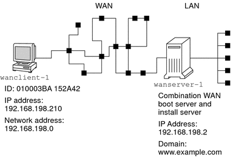

Sample Site Setup
Figure 13-1 shows the site setup for this example.
Figure 13-1 Sample Site for WAN Boot Installation

This sample site has the following characteristics.
The server wanserver-1 is to be configured as a WAN boot server and an install server.
The IP address of wanserver-1 is 192.168.198.2.
The domain name of wanserver-1 is www.example.com.
wanserver-1 is running the current Solaris release.
wanserver-1 is running the Apache web server. The Apache software on wanserver-1 is configured to support HTTPS.
The client to be installed is named wanclient-1.
wanclient-1 is an UltraSPARCII system.
The client ID for wanclient-1 is 010003BA152A42.
The IP address of wanclient-1 is 192.168.198.210.
The IP address of the client's subnet is 192.168.198.0.
The client system wanclient-1 has Internet access, but is not directly connected to the network that includes wanserver-1.
wanclient-1 is a new system that is to be installed with the current Solaris release software.